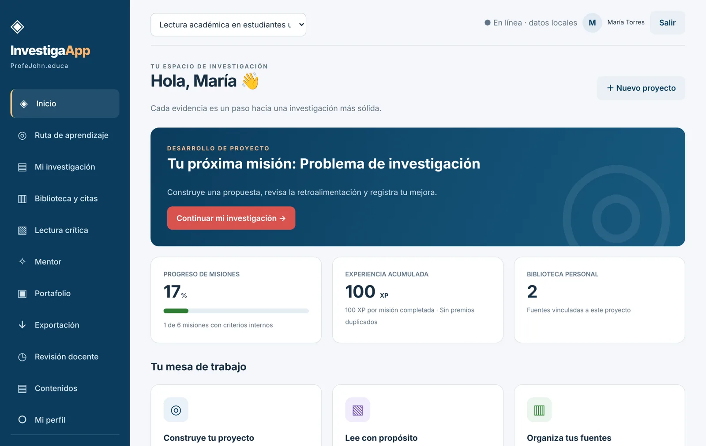
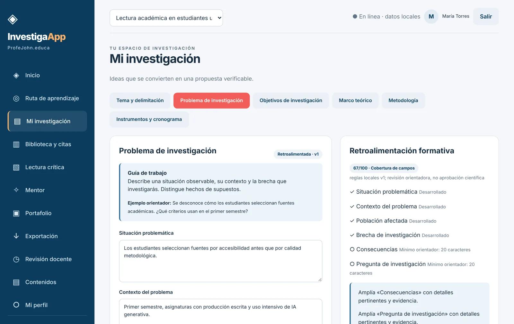
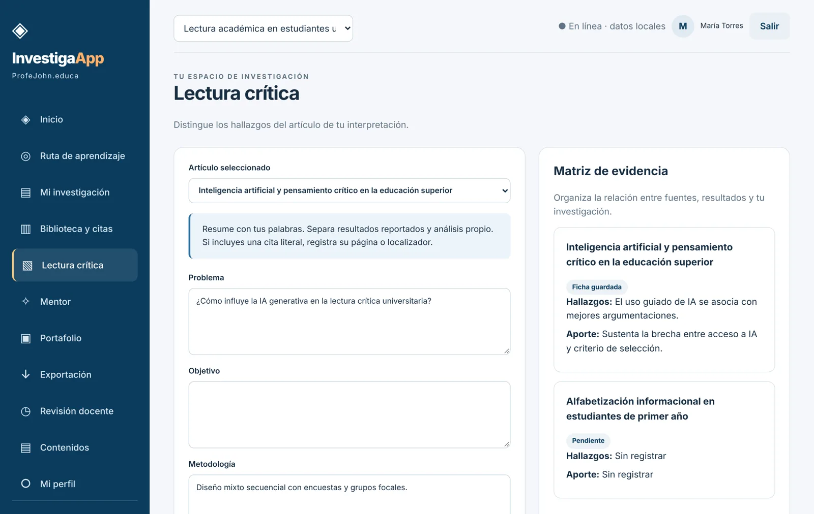
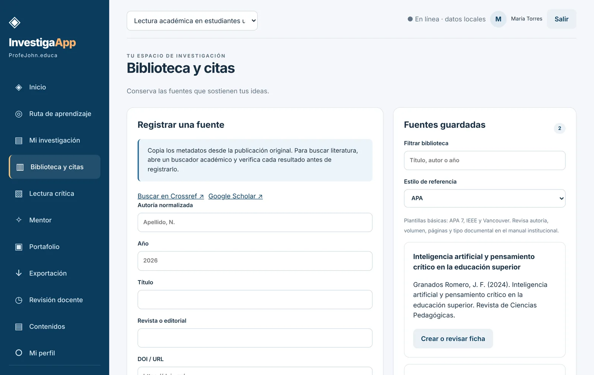
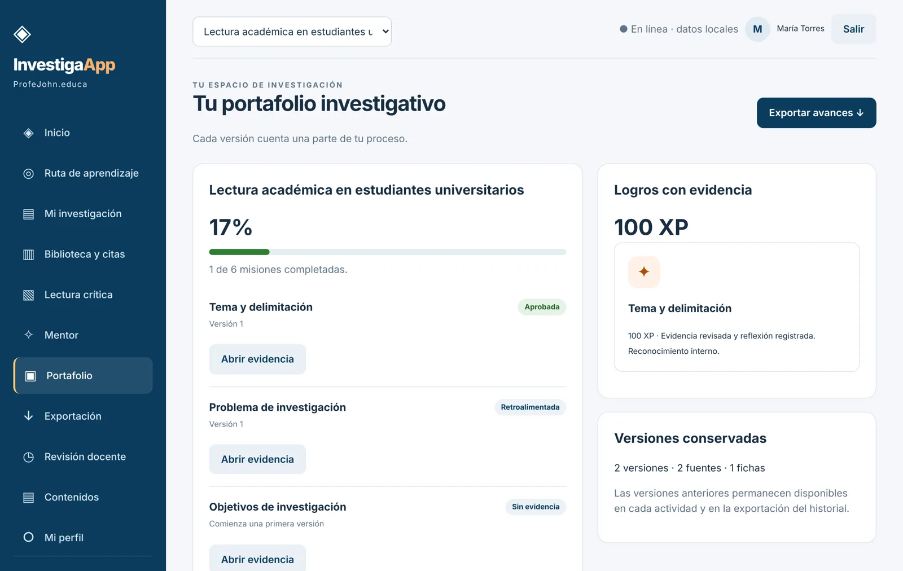
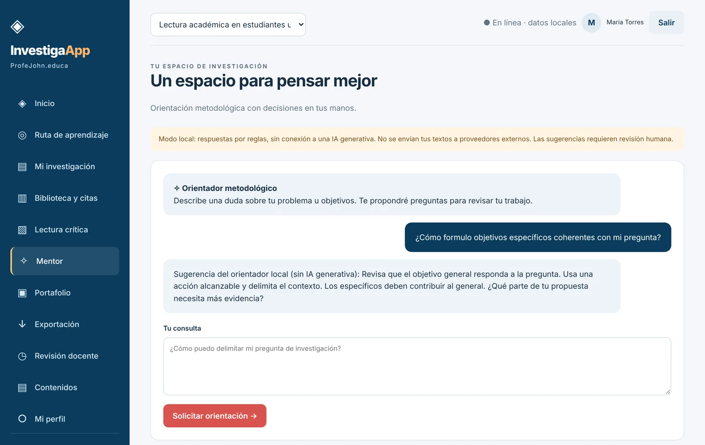
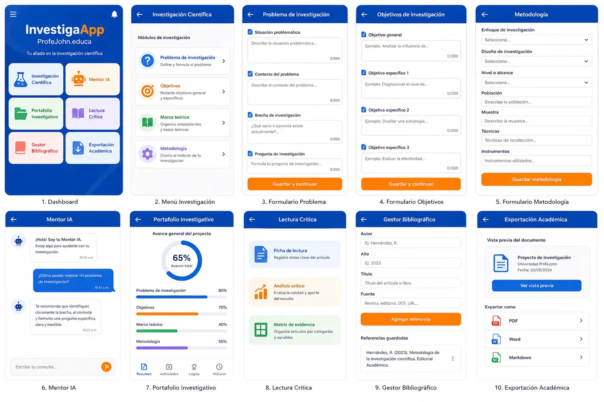

◎
Diagnóstico inicial
Cinco preguntas que orientan la ruta de acompañamiento: Fundamentos guiados o Desarrollo de proyecto.
Aprende · Investiga · Transforma
InvestigaApp acompaña a estudiantes universitarios en la construcción de su proyecto de investigación: del tema a la metodología, con evidencias versionadas, retroalimentación formativa y un portafolio que muestra el proceso, no solo el resultado.
Gratis · Sin instalación · Tu progreso guardado en la nube

Aprender haciendo
Cada misión exige una evidencia escrita, una revisión con rúbrica y una reflexión sobre la mejora aplicada. El avance es secuencial: no se pasa a la siguiente etapa sin cerrar la anterior.
Fenómeno, contexto, población y justificación.
Situación observable, brecha y pregunta de investigación.
General y específicos coherentes con la pregunta.
Antecedentes, bases teóricas y categorías.
Enfoque, diseño, muestra, técnicas y ética.
Relación con objetivos, recursos y plan de análisis.
Tu mesa de trabajo
Cinco preguntas que orientan la ruta de acompañamiento: Fundamentos guiados o Desarrollo de proyecto.
Cada guardado crea una versión inmutable. El historial muestra cómo evolucionó tu propuesta.
Registro de fuentes con detección de duplicados y referencias básicas APA 7, IEEE y Vancouver.
Fichas de once campos vinculadas a cada fuente y una matriz de evidencia para el marco teórico.
Preguntas para revisar tu trabajo. Funciona por reglas pedagógicas, sin enviar tus textos a servicios de IA externos.
Portafolio en Word, Markdown, historial JSON o PDF desde el diálogo de impresión.
Acceso de consulta y comentarios por versión, autorizado y revocable por el propietario.
El rol administrador publica nuevas versiones de guías y ejemplos para cada actividad.
La aplicación por dentro






Trazabilidad y privacidad
Cada versión, retroalimentación, fuente, ficha y comentario docente se guarda en una base de datos segura en la nube. Puedes continuar desde cualquier equipo y tu docente puede revisar tu avance desde el suyo.
Las reglas pedagógicas se aplican en el servidor: no se puede completar una misión sin evidencia revisada y reflexión, ni saltar etapas. Cada cambio queda en una bitácora con fecha, para que el portafolio muestre el proceso real.